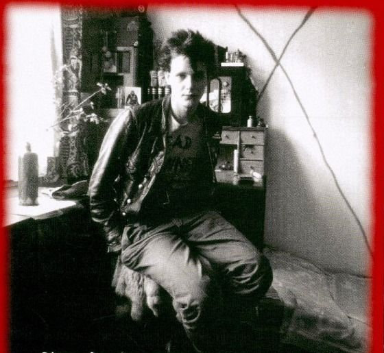
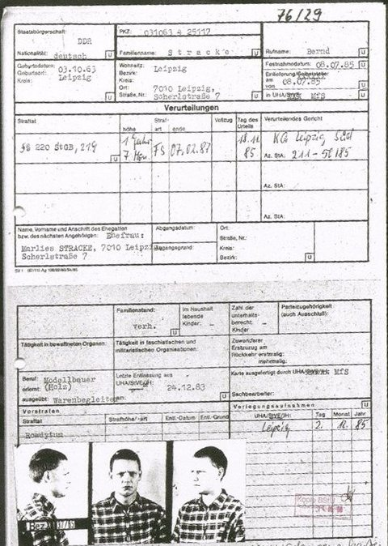
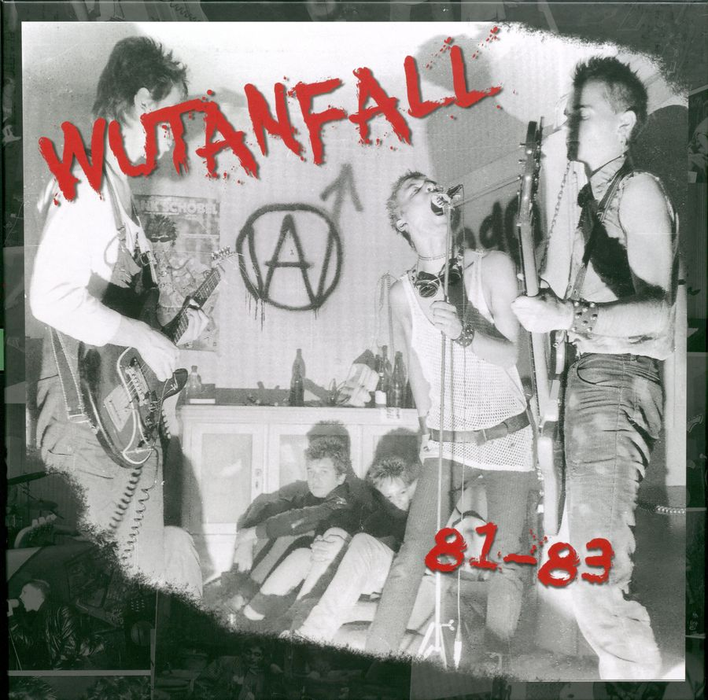
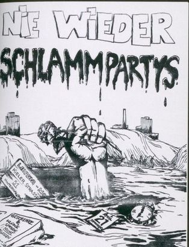
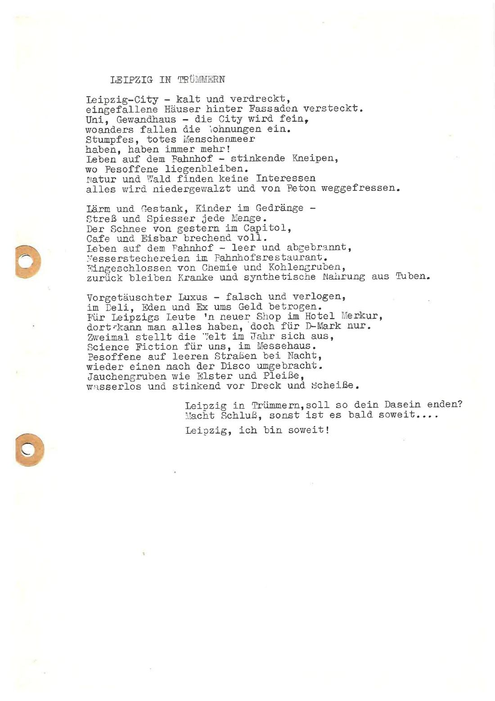
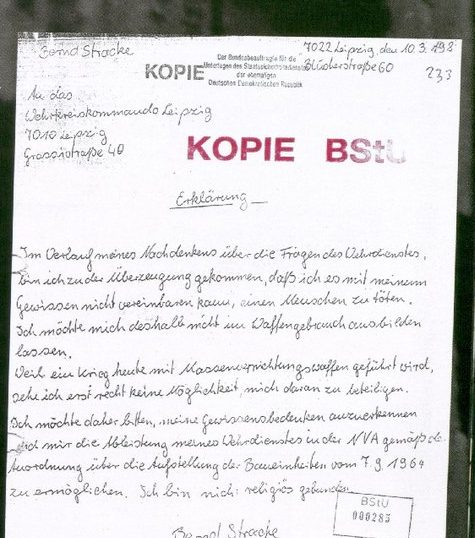
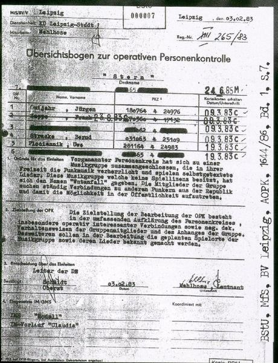
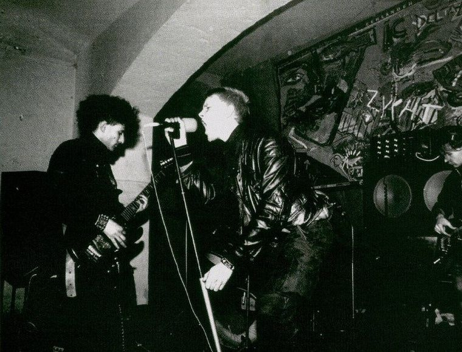
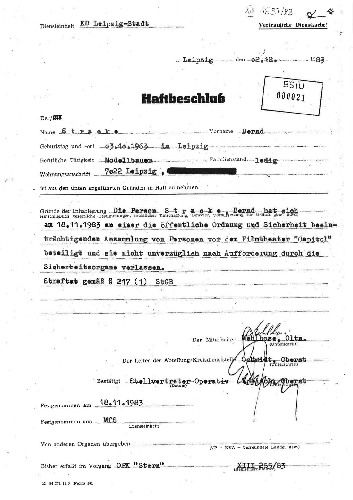

Zappa
Spitzel ab Juli 1983, für Geld. Stracke nennt ihn einen „Angst-IM“.
Leipzig 1981–1986 · Schulprojekt Geschichte/GK
Bernd
Punk gegen die Akte
Er sang bei Wutanfall, H.A.U. und L’Attentat. Dafür wurde er überwacht, zweimal verhaftet und 1986 in den Westen verkauft. Seine Geschichte gibt es zweimal: in den Akten der Stasi und in seinen eigenen Worten.
„Alles war Staat.“


drei Jahre dazwischen
Leitfrage 1 · Akteure und biografischer Kontext
Geboren 1963 in Leipzig, gelernter Modellbauer. Punk hört er zum ersten Mal auf einer Platte, die eine Cousine aus dem Westen schickt.
Über Freunde aus dem Stadtteil Lindenau landet er bei Wutanfall, der ersten Punkband der Stadt. Ein paar Dutzend Jugendliche, Wohnungen statt Bühnen, Kassetten statt Platten.
„Wutanfall war die Szene. Es gab nicht mehr.“
Er singt zuerst bei H.A.U., übernimmt im September 1983 das Mikrofon bei Wutanfall, als Sänger Chaos unter dem Druck der Stasi aussteigt, und gründet Ende 1984 L’Attentat.

Dieselben Menschen, zwei Wahrheiten. Schalte um.
Singt bei H.A.U., Wutanfall und L’Attentat. Schickt Berichte über die DDR-Punks an Fanzines im Westen.
Seit März 1983 überwacht. 1983 Haft wegen „Zusammenrottung“, 1985 verurteilt wegen „ungesetzlicher Verbindungsaufnahme“.
Gründet 1981 Wutanfall. Das Gesicht der Band.
Steht ganz oben auf der Liste der Stasi. Nach demütigenden Verhören verlässt er 1983 die Band.
Gründet H.A.U. und L’Attentat mit, bringt Leute zusammen.
Sprüht 1983 „Freiheit“ für verhaftete Berliner Punks an Wände. Sieben Monate Haft. Verraten von einem Freund.
Spielt Bass bei Wutanfall, bei ihm trifft sich die Szene.
Unterschreibt im Juli 1983 als Spitzel. Quittungen über je 100 Mark sind erhalten.
Gitarre bei Wutanfall, Mitgründer von L’Attentat, organisiert Konzerte.
Seit 1982 Spitzel der Kriminalpolizei. Verrät die Sprühaktion und Strackes Protest vor dem Kino Capitol.
Bestellt Punks „zur Klärung eines Sachverhalts“ ein. Stracke hält ihn zuerst für einen Polizisten.
Oberleutnant der Stasi. Führt die Akte gegen Wutanfall, die „Operative Personenkontrolle Stern“.
Leitfrage 2 · Gesellschaftliche Umstände
Der Staat hatte für jeden jungen Menschen einen Weg vorgesehen. Punk war nicht vorgesehen.
Lebenslauf nach Henryk Gericke [Q9]
Wer ausscherte, riskierte Lehrstelle, Studium und Freiheit. Offiziell durfte es Punk in der DDR gar nicht geben. Für die FDJ-Zeitung Junge Welt war er 1977 ein Geschäft westlicher Manager und „musikalischer Analphabetismus“ [Q8]. Wer in der DDR trotzdem Punk war, galt deshalb als vom „Klassenfeind“ gesteuert.
„Punk in der DDR war ein politisches Phänomen mit popkulturellem Hintergrund.“
Ohne staatliche Einstufung durfte keine Band auftreten. 1983 fiel Wutanfall bei der Prüfung durch: wegen Kleidung, Texten und „Rhythmusschwankungen“ [Q2]. Es blieben Keller, Wohnungen und Kirchen. Und die Straße, wo es gefährlich war:
„Problematisch wurde es, wenn man alleine war. […] war man schon schnell mal Freiwild.“

Leitfrage 3 · Wogegen haben sie sich gewendet?
Die beste Antwort gibt ein Lied von Wutanfall. Drück auf Abspielen: Der Text erscheint Zeile für Zeile, darunter steht unsere Deutung.
0:00 / –:––
Die Tonaufnahme fehlt noch. Der Text läuft ohne Ton mit.
Drück auf Abspielen.
Hier erscheint zu jeder Stelle unsere Deutung. Klick auf eine Zeile, um dorthin zu springen.

Text nach dem Typoskript, die Aufnahme kann abweichen. Text: Ray Schneider nach einem Entwurf von Chaos [Q2, Q6]. Tonaufnahme: Wutanfall [Q14].
Das Lied nennt weder SED noch Stasi. Es zeigt nur, was jeder sehen konnte, aber niemand sagen durfte.
„Da habe ich gesagt, ich nenne das Kind jetzt beim Namen und verschlüssle hier nichts mehr.“
1981/82
Wutanfall · „Leipzig in Trümmern“
„Uni, Gewandhaus – die City wird fein, / woanders fallen die Wohnungen ein.“
Sie zeigen, was kaputt ist.
1985
L’Attentat · „… Deutschland in Trümmern“
„Wenn die Kampfgruppe vor deinem Haus marschiert / und das Kind in der Schule für den Krieg trainiert …“
Sie sagen, wer schuld ist.
Text 1985 nach dem Filmheft „ostPUNK! Too much future“ [Q7]
Leitfrage 4 · Ziele, Motive und Werte
Am Anfang aus Spaß. Was daraus wurde, hat vor allem der Staat selbst bewirkt.
Musik, Freunde, Partys, Kassetten tauschen. Politik spielt kaum eine Rolle.
„Mensch, das war unser Sommer!“
Freunde werden verhört und eingesperrt. Stracke protestiert öffentlich und kommt selbst in Haft.
„Politisiert wurden die Punks, indem sie kriminalisiert wurden.“
Er verweigert die Waffe, will ausreisen und schreibt für den Westen. Gefängnis nimmt er in Kauf.
„Wenn es nicht anders geht, über den Knast.“
Zitate: Stracke zu Chaos (Vorwort [Q4]) · Booklet „too much future“ [Q11] · Stracke, Interview 2017 [Q1]
Am 30. Juni 1983 sprach Oberleutnant Mehlhose mit Stracke und notierte danach:
„Seine Ausführungen zur Begründung der unpolitischen Motive der Gruppe ‚WA‘ wirkten glaubhaft.“
Im Sommer 1983 hielt also selbst der Stasi-Offizier die Band für unpolitisch. Knapp fünf Monate später saß Stracke in Haft. Die Verfolgung hat aus einem Punk einen Gegner des Staates gemacht.
Zitiert nach Ulrike Geisler [Q3], S. 50

Leitfrage 5 · Handlungsspielräume und Reaktionen
Was konnte ein Punk tun, und was tat der Staat dagegen? Beide Seiten nebeneinander.
„Vorgenannter Personenkreis hat sich zu einer Musikgruppe zusammengeschlossen, die in ihrer Freizeit die Punkmusik verherrlicht […]. Die Mitglieder der Gruppe suchen ständig Verbindungen zu anderen Punkern aus der Republik […].“
Ziel: „umfassende Aufklärung […] sowie neg. dek. Verhaltensweisen“
„Klartext“ ist unsere Übersetzung. „Stern“ steht für die Sternwartenstraße, wo sich die Szene traf [Q4].

Stracke wird „zur Klärung eines Sachverhalts“ vorgeladen. So erinnert er sich:
„Wenn sie für uns arbeiten, halten wir ihnen den Rücken frei. […] Wir besorgen ihnen eine Wohnung …“
„Wir sind nicht Polizei. Wir sind das Ministerium für Staatssicherheit.“
„Na dann erst recht nicht!“
„Wir können ihnen auch das Leben zur Hölle machen. Diese Macht haben wir auch!“
Interview 2017 [Q1], S. 41. Ein Protokoll der Stasi dazu liegt uns nicht vor.

Spitzel ab Juli 1983, für Geld. Stracke nennt ihn einen „Angst-IM“.
Verriet die Kerzenaktion, laut einem Booklet für 250 Mark [Q11]. Stracke enttarnte ihn 1994.
Nach der Wende stellte Stracke Imad zur Rede:
„Ich habe uns doch alle geschützt.“
„Bist Du Gott oder was?“
Interview 2017 [Q1], S. 42. Eine Entschuldigung bekam Stracke nie.
Kann man jemandem verzeihen, der einen verraten hat?
Quellenkritik
Wann war der Protest vor dem Capitol? Unsere Quellen sind sich nicht einig.
Geschrieben zwei Wochen nach der Tat. Das Datum war für die Anklage wichtig. Die Gefangenenkarte bestätigt: Entlassung am 24.12.1983, also gut fünf Wochen Haft.
Eine Woche daneben. Unsere Vermutung: Am 25.11. meldete eine Nachrichtenagentur die Festnahmen. Das Datum der Meldung wurde wohl mit dem der Aktion verwechselt.
Ein ganzes Jahr daneben. Die Dokfilmwoche war jedes Jahr im November, das macht Verwechslungen leicht.
Der Protest war am 18. November 1983. Beim Datum ist hier die Akte des Täters verlässlicher als die Erinnerung der Betroffenen.
Bei der Frage, was an dem Abend passiert ist und warum, ist es umgekehrt: Was in der Akte fehlt, sind Gewalt und Demütigung in den Verhören, von denen Betroffene berichten [Q3].

Bilanz
Nicht jedes Anderssein ist Widerstand. Wir ordnen Strackes Weg auf einer Skala ein. Danach bist du dran.
Vereinfachtes Stufenmodell aus der Forschung zur DDR-Opposition. Die Einordnung ist unsere eigene.
Unsere Einordnung: 1981/82 Nonkonformität, November 1983 Protest, 1984 Verweigerung, 1985 zwischen Protest und Opposition.
Hake an, was dich überzeugt. Es zählt die Begründung, nicht ein richtig oder falsch.
Wähle Argumente aus, die dich überzeugen.
Stracke ist nicht als Widerstandskämpfer gestartet. Er ist Schritt für Schritt zu einem Gegner des Staates geworden, und zwar durch den Staat selbst.
Die DDR stürzen wollte er nicht. Aber in einem Land, das den ganzen Menschen für sich beanspruchte, war schon das Beharren auf einem eigenen Leben eine Form von Widerstand.
Heute berät Bernd Stracke Gemeinden in Sachsen gegen Extremismus [Q13]. Er sagt:
„Ich will die Welt, in der ich lebe, mitgestalten. Wenn ich das nicht kann, lebe ich in einer Unfreiheit.“
Für das Zeitzeugengespräch
Quellen und Bildnachweise
Bilder: aus den genannten Booklets und Unterrichtsmaterialien, nur für schulische Zwecke. Die Rechte liegen bei den Urhebern. Beteiligte nennen wir mit ihren Spitznamen aus den Quellen.